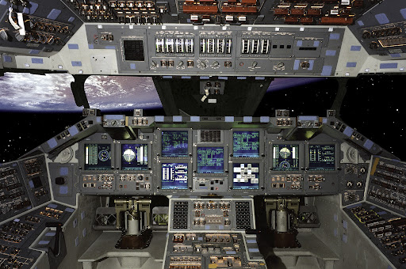
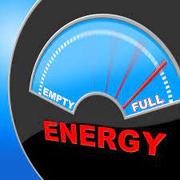

La conception d'une fusée ou tout autre engin est la base même de l'aérospatiale, sans ça, |
 |
Pour ce faire, on va utiliser des moteurs de rendus 3D et de modélisation qui permettent de créer des formes et objets et de leur donner une texture ce qui permet donc de créer l'objet désiré avec précision,
et avec les nouvelles technologies, voir la taille réelle et tester leur fonctionnement à petite échelle aussi, avec les imprimantes 3D. On peut aussi les imprimer ou bien utiliser des machines pour découper ces pièces dans du métal ou autre pour que la pièce soit plus résistante.
Cependant, des fois il n'est pas possible de faire des tests même à petite échelle, il faut donc trouver un moyen d'être sûr qu'il n'y aura pas de problèmes lors du lancement, la technologie intervient ici de nouveau!

|
La simulation permet donc de tester ce qui est soit impossible à tester ou trop cher ou trop compliqué à réaliser... |
La simulation permet de tester plusieurs paramètres comme par exemple la chaleur qui va être générée et donc de savoir si par exemple le matériel résistera ou non, donc savoir si on peut utiliser ce matériel, mais aussi de savoir en cas de problème technique ou autre, si quelque chose arrive, savoir comment réagir et ce qu'il se passera et donc créer des protocoles de sécurité afin que les opérations en cours se déroulent ou s'annulent dans la plus grande sécuritée possible.
Ces simulations permettent aussi de tester des design différents et donc permettent de choisir le meilleur et ainsi optimiser les fusées ou autre engins pour qu'ils consomment moins de carburant ou autre resource ou, soit juste plus maniable que d'autres qui présenter d'autre défauts comme par exemple le manque d'aérodynamisme qui génererait donc plus de friction. Ces simulations sont donc très importantes car elles facilitent grandement la recherche et l'accélère beaucoup aussi.
On en comprend donc l'utilité des simulations lorsqu'on cherche à envoyer des rovers sur mars ou des satellites à des endroits spéciaux comme par exemple les satellite Voyager 1 et Voyager 2 qui de nos jours sont toujours en fonction après près de 40 ans, ces satellites ont été lancée dans une fenêtre de lancement qui n'arrive que tous les 176 ans! Ils n'ont pas forcément utilisé de simulation mais aurait très bien pu le faire pour avoir un résultat très précis.
|
Le pilotage est l’une des, si ce n’est LA nécessitée la plus importante lors d’un voyage, si on ne pilote pas, on ne va nulle part. Cependant, ce n’est pas facile de conduire une voiture, encore moins une fusée ! |
 |
|  |
Justement, ces calculs permettent aussi de connaître vitesse, direction etc… Et grâce à l’informatique, on va pouvoir afficher directement les coordonnées du vaisseau, sa vitesse et pleins d’autre informations comme le niveau de carburant ou plus encore… |
Si vous avez besoin de plus d'information, merci de contacter le développeur.


Les droits d'auteurs de tout ce qui est présent sur le site reviennent à ceux qui les ont créés.